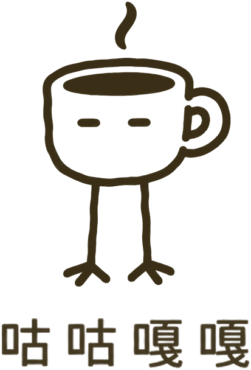
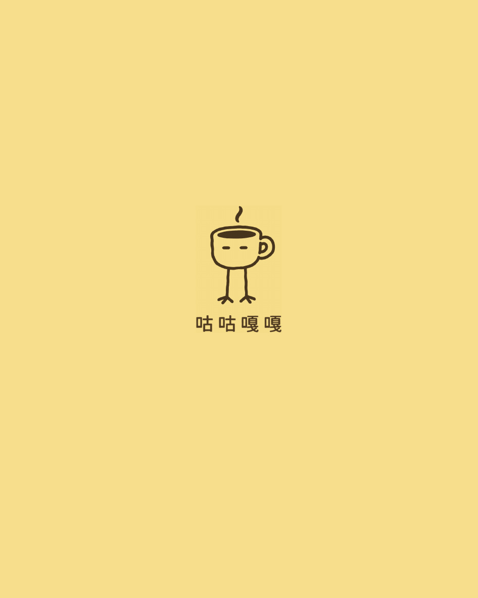

01 中焙
中焙
中焙
果果谷
衣索比亞 · 古吉
- 處理法
- 四天厭氧日曬
- 烘焙度
- 中焙
濾掛 12g 整豆 200g

一杯咖啡，一點自己的時間。兩款豆，兩種喝法。把複雜留在外面，把咖啡留在日常。
OUR COFFEE
同樣來自衣索比亞古吉，
不同的處理法與烘焙選擇。
中焙
衣索比亞 · 古吉
濾掛 12g 整豆 200g

中深焙衣索比亞 · 古吉
濾掛 12g 整豆 200g
圖為包裝設計示意，商品尚未開賣。
YOUR DAILY CUP
想簡單一點，或多一點儀式感，
這杯咖啡都留給你。

撕開、掛好、注水。然後，喝咖啡。
想隨手沖一杯
不用磨豆，打開就能開始。
讓咖啡，跟上你的日常。
喜歡自己掌握節奏
從研磨開始，慢慢沖一杯。
把這段時間，留給喜歡的事。
SEE YOU SOON
我們正在準備蝦皮賣場。
準備好後，就能從這裡找到咕咕嘎嘎。
蝦皮賣場準備中
目前尚未開放訂購，謝謝你先來逛逛。